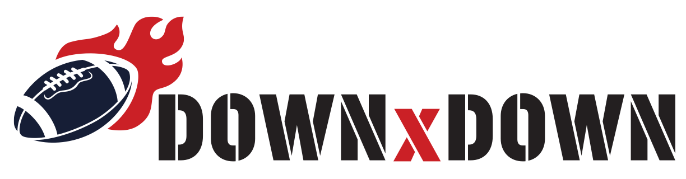

Mock · marketing home (SCOPE §45), sixth pass
Turf hero + game grid, flat and plain. Each section is a down; the close is the end zone. Every map, number and sentence is this week's real data; dashed tags mark the plugin's live blocks.
Show block tags

This week
Teams
Players
Leaders
My team
2025
See this week
%ROOT%